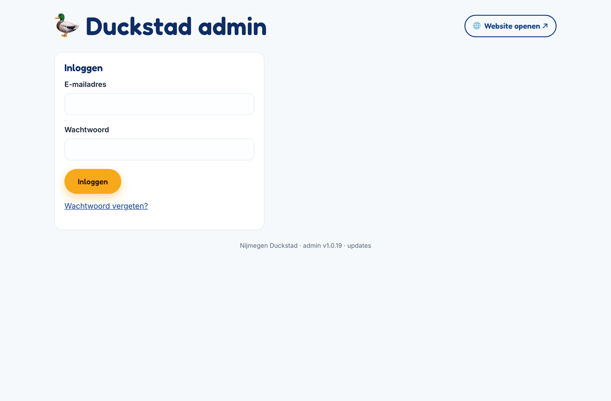
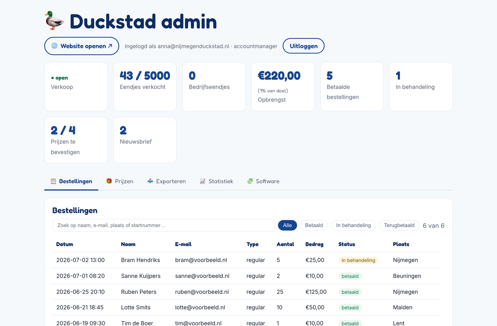
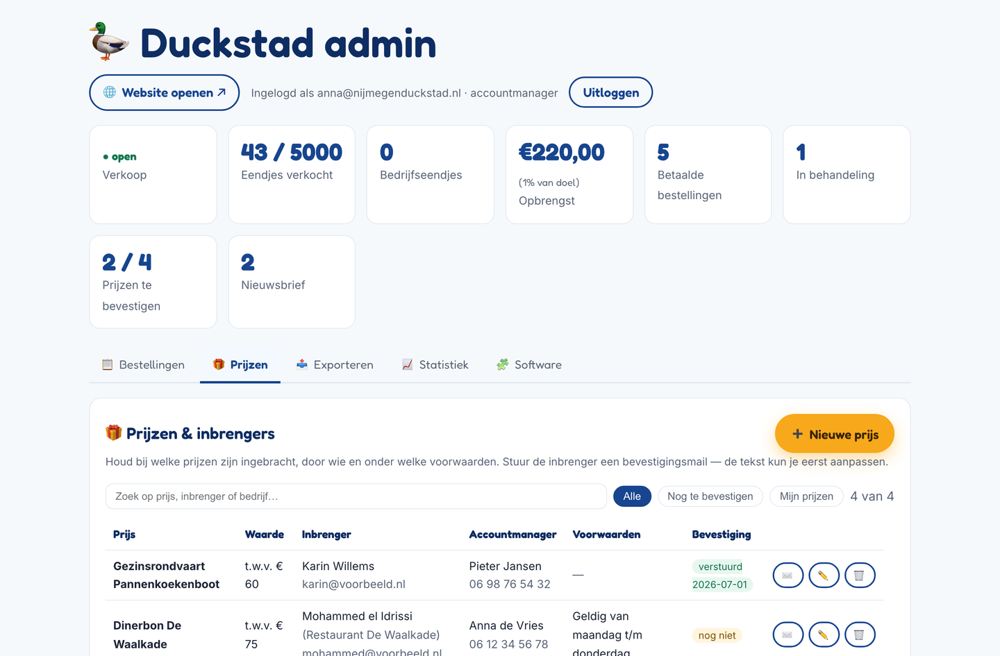
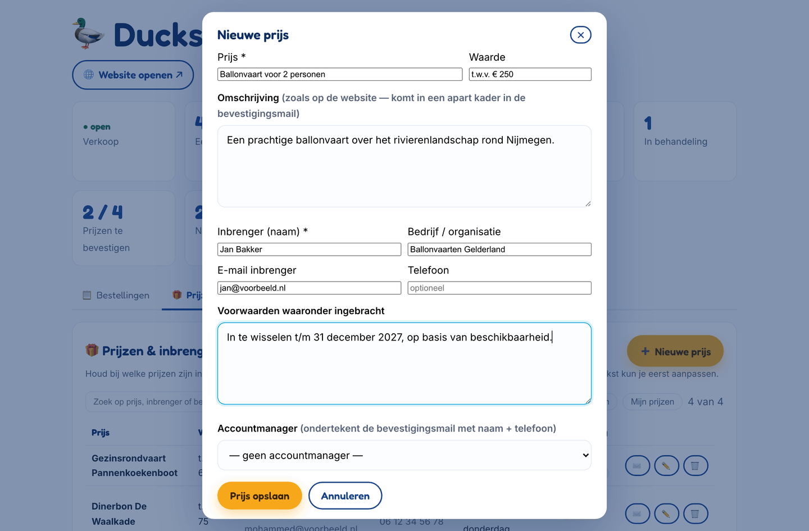
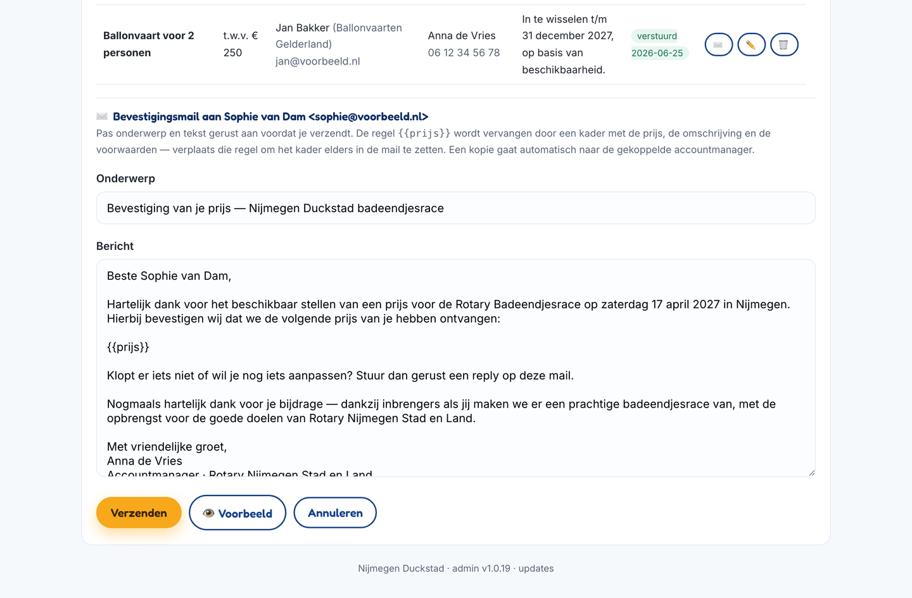
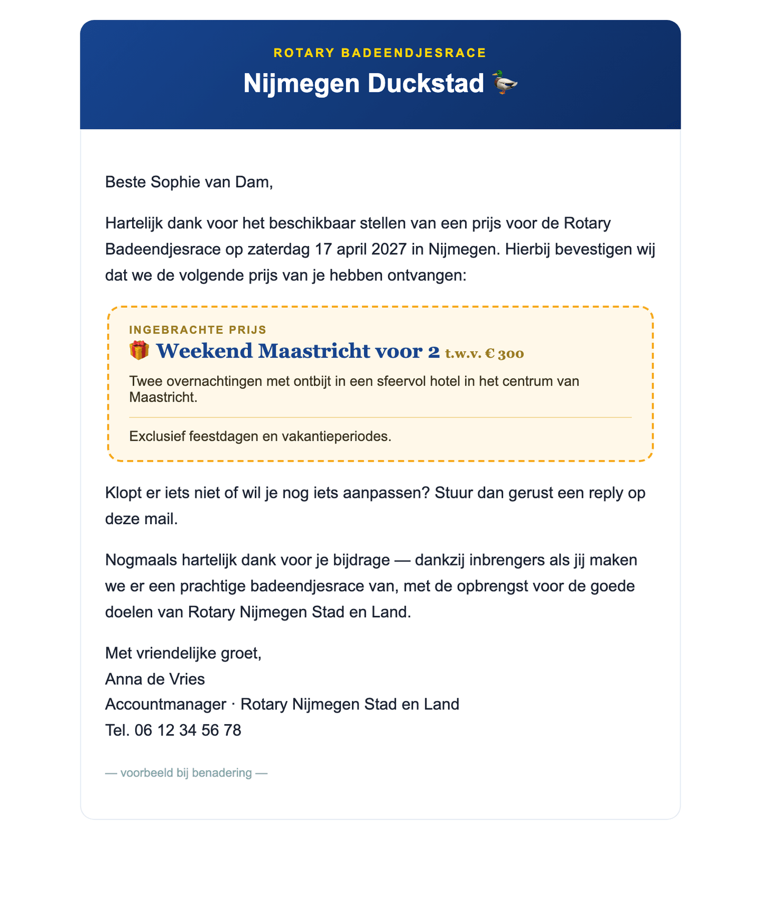
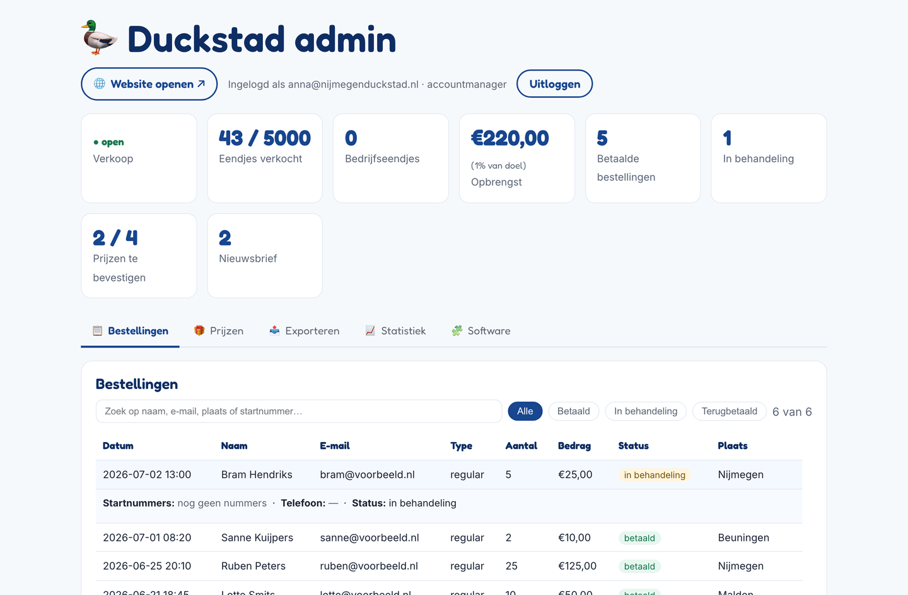
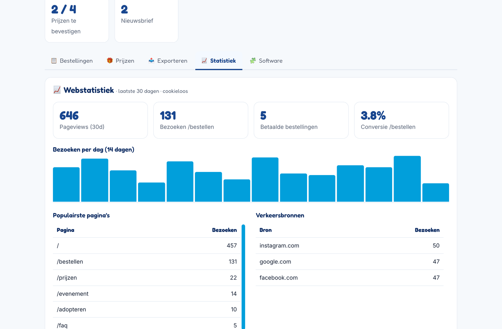
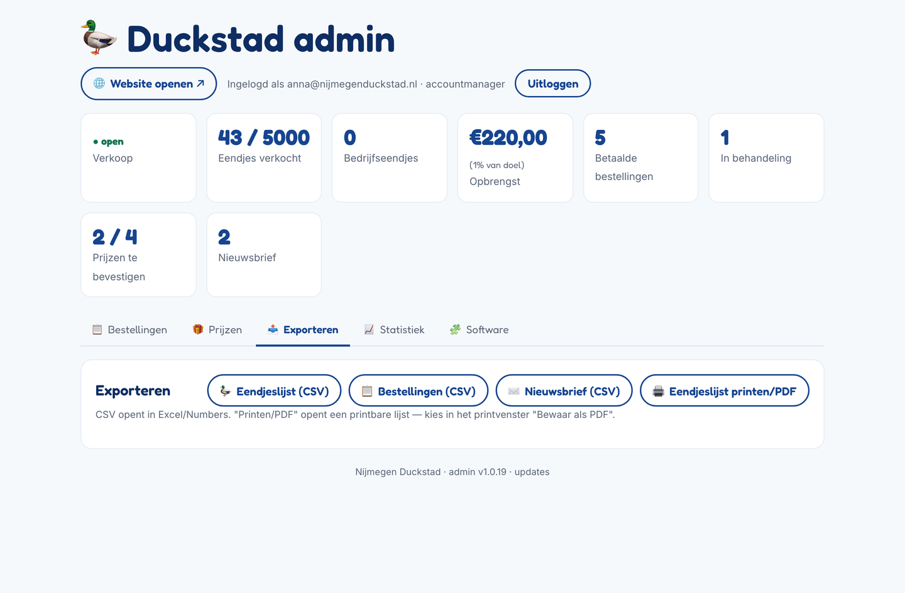

De schermafbeeldingen in deze handleiding tonen voorbeeldgegevens.
1. Wat doet een accountmanager?
Als accountmanager benader je bedrijven en particulieren die een prijs inbrengen voor de badeendjesrace. In het beheersysteem ("Duckstad admin") kun je:
ingebrachte prijzen registreren en bewerken, met de gegevens van de inbrenger en de voorwaarden;
de inbrenger een bevestigingsmail sturen, ondertekend met jouw naam en telefoonnummer;
de bestellingen, statistiek en exports inzien (alleen-lezen, handig voor de stand van zaken).
Verkoopinstellingen, de race-uitslag en het gebruikersbeheer zijn voorbehouden aan de beheerder; die tabbladen zie je niet.
2. Inloggen (en wachtwoord instellen)
Ga naar nijmegenduckstad.nl/admin.
Vul je e-mailadres en wachtwoord in en klik op Inloggen.

Afbeelding 1: Het inlogscherm op nijmegenduckstad.nl/admin.
Eerste keer? De beheerder maakt je account aan; je ontvangt dan automatisch een e-mail met een link om zelf een wachtwoord in te stellen. De link is 72 uur geldig.
Wachtwoord vergeten? Klik op het inlogscherm op Wachtwoord vergeten?, vul je e-mailadres in en je krijgt een nieuwe instel-link per mail.
⚠️ Geen mail ontvangen? Kijk in je spammap. Nog niets? Vraag de beheerder om de reset-mail opnieuw te sturen.
3. Het overzicht: cijfers en tabbladen
Na het inloggen zie je bovenaan de actuele cijfers: of de verkoop open is, hoeveel eendjes er zijn verkocht, de opbrengst en, voor jou het belangrijkst, "Prijzen te bevestigen": hoeveel ingebrachte prijzen nog geen bevestigingsmail hebben gehad.

Afbeelding 2: Het overzicht direct na het inloggen, met de cijfers bovenaan en daaronder de tabbladen.
Daaronder staan de tabbladen waar jij bij kunt:
📋 Bestellingen: alle eendjes-bestellingen (alleen-lezen);
🎁 Prijzen: jouw werkplek: prijzen en inbrengers beheren;
📤 Exporteren: lijsten downloaden als CSV of print;
Open het tabblad 🎁 Prijzen. Je ziet alle ingebrachte prijzen met waarde, inbrenger, gekoppelde accountmanager, voorwaarden en of de bevestiging al is verstuurd.

Afbeelding 3: Het tabblad Prijzen met zoekveld, filters en per prijs de knoppen ✉️ (mail), ✏️ (bewerken) en 🗑 (verwijderen).
Zoeken: typ in het zoekveld een deel van de prijs, de inbrenger of het bedrijf.
Nog te bevestigen: toont alleen prijzen zonder verstuurde bevestigingsmail.
Mijn prijzen: toont alleen de prijzen die aan jou gekoppeld zijn.
In de kolom Bevestiging zie je verstuurd met de datum (groen) of nog niet (geel).
5. Een nieuwe prijs toevoegen
Klik rechtsboven op ➕ Nieuwe prijs.
Vul de velden in (zie hieronder) en klik op Prijs opslaan.

Afbeelding 4: Het invulvenster voor een nieuwe prijs (hier al deels ingevuld als voorbeeld).
Prijs (verplicht): de naam van de prijs, bijvoorbeeld "Ballonvaart voor 2 personen".
Waarde: vrije tekst, bijvoorbeeld "t.w.v. € 250".
Omschrijving: wervende tekst zoals die op de website komt; deze verschijnt ook in het prijskader van de bevestigingsmail.
Inbrenger (naam) (verplicht), Bedrijf / organisatie, E-mail en Telefoon: de gegevens van degene die de prijs beschikbaar stelt. Zonder e-mailadres kan er geen bevestigingsmail worden gestuurd.
Voorwaarden: afspraken zoals geldigheidsduur of beschikbaarheid; deze komen ook in de bevestigingsmail.
Accountmanager: koppel jezelf (of een collega). De gekoppelde accountmanager ondertekent standaard de bevestigingsmail en krijgt daarvan een kopie.
Bewerken of verwijderen doe je in de prijzentabel met de knoppen ✏️ (opent hetzelfde venster, vooraf ingevuld) en 🗑.
💡 Koppel bij het invoeren meteen de juiste accountmanager. Dan kloppen de ondertekening van de mail en het filter "Mijn prijzen" vanzelf.
6. De bevestigingsmail sturen
Elke inbrenger hoort een nette bevestiging te krijgen van de prijs die hij of zij heeft toegezegd. Dat gaat zo:
Klik in de prijzentabel op de ✉️-knop bij de prijs.
Onderaan opent het paneel "Bevestigingsmail aan …". Het onderwerp en het bericht staan al voor je klaar; pas ze gerust aan.
Klik op 👁 Voorbeeld om te zien hoe de mail eruit komt te zien.
Klik op Verzenden. De tabel toont daarna "verstuurd" met de datum.

Afbeelding 5: Het mailpaneel: de tekst is vooraf ingevuld en volledig aanpasbaar voordat je verzendt.
Goed om te weten:
De regel {{prijs}} in het bericht wordt automatisch vervangen door een kader met de prijs, de omschrijving en de voorwaarden. Verplaats die regel als je het kader ergens anders in de mail wilt.
De mail wordt ondertekend met jouw naam en telefoonnummer (zoals bekend bij je account).
De gekoppelde accountmanager krijgt automatisch een kopie (CC) van de mail.
Is de prijs aan een andere accountmanager gekoppeld dan jijzelf, dan krijg je een waarschuwing; pas dan zo nodig de ondertekening aan.
Antwoorden van de inbrenger komen binnen op het centrale adres van Nijmegen Duckstad.

Afbeelding 6: Het voorbeeld van de mail: bovenin de Duckstad-kop, in het midden het prijskader, onderaan jouw ondertekening.
💡 Al eerder een bevestiging gestuurd? Dan waarschuwt het systeem voordat je opnieuw verstuurt, zodat je niet per ongeluk dubbel mailt.
7. Bestellingen inzien
Op het tabblad 📋 Bestellingen zie je alle bestellingen van eendjes-adoptanten. Je kunt zoeken (naam, e-mail, plaats of startnummer) en filteren op status (Alle / Betaald / In behandeling / Terugbetaald). Klik op een regel om de details te openen, inclusief de toegekende startnummers en het telefoonnummer.

Afbeelding 7: Klik op een bestelling voor de details. Als accountmanager kun je alles bekijken, maar niets wijzigen.
8. Statistiek bekijken
Het tabblad 📈 Statistiek toont het websitebezoek van de afgelopen 30 dagen: paginaweergaven, bezoeken aan de bestelpagina, betaalde bestellingen en de conversie (welk deel van de bezoekers van de bestelpagina daadwerkelijk bestelt). Handig om het effect van een actie of social-media-bericht te volgen. De telling is volledig anoniem en cookieloos.

Afbeelding 8: Webstatistiek met bezoeken per dag, populairste pagina's en verkeersbronnen.
9. Lijsten exporteren
Op het tabblad 📤 Exporteren download je met één klik:
Eendjeslijst (CSV): alle verkochte eendjes met startnummer en koper;
Bestellingen (CSV): alle bestellingen met status en bedrag;
Nieuwsbrief (CSV): e-mailadressen van kopers die updates willen ontvangen;
Eendjeslijst printen/PDF: een printvriendelijke lijst; kies in het printvenster "Bewaar als PDF".

Afbeelding 9: De exportknoppen. CSV-bestanden openen direct in Excel of Numbers.
10. Veelgestelde vragen
Ik zie geen ✉️-knop bij een prijs.
Dan is er geen e-mailadres van de inbrenger ingevuld. Klik op ✏️, vul het e-mailadres aan en sla op; de mailknop verschijnt dan vanzelf.
Kan ik een verstuurde bevestiging opnieuw sturen?
Ja. Klik opnieuw op ✉️; het systeem waarschuwt dat er al eerder een bevestiging is verstuurd, en jij beslist of je opnieuw verzendt.
Ik wil een prijs verwijderen, maar twijfel.
Verwijderen kan niet ongedaan worden gemaakt. Twijfel je? Overleg dan even met de beheerder.
Ik kan iets niet aanpassen (verkoop, race, gebruikers).
Dat klopt: die onderdelen zijn alleen voor de beheerder. Zie je iets dat aangepast moet worden, geef het dan door.
Mijn naam of telefoonnummer in de ondertekening klopt niet.
De beheerder kan je naam en telefoonnummer aanpassen in het gebruikersbeheer; daarna staat het meteen goed in nieuwe mails.